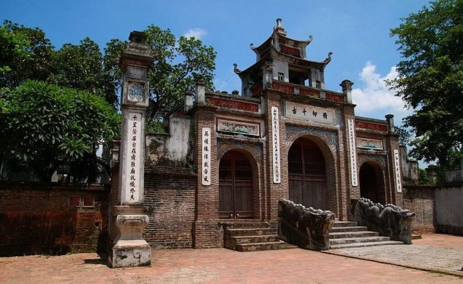

Visit Co Loa citadel
For generations, Co Loa citadel and legendary characters like Kim Quy god with a magic crossbow shot down thousands of enemies, about King An Duong Vuong built the citadel and princess My Chau and Trong Thuy. ... all have become an indispensable part of the spiritual and cultural life of the Vietnamese people. Now, let's explore with Vntrip.vn the following complete and detailed Co Loa Citadel travel guide!
1. How to get to Co Loa citadel?
Co Loa citadel (photo collection)
Located only 24km from the city center, Co Loa citadel is one of the tourist destinations near Hanoi that many young people choose as a weekend destination. If you want to visit Co Loa citadel, you follow the old National Highway 1A to kilometer 10, which is Duong bridge. After crossing the bridge, you will come to Yen Vien town, turn left onto Highway 3, go further 5km to the intersection into Co Loa. If you go by bus, you can take route 46 if in My Dinh area or routes 15, 17 if at Long Bien transit station.
2. Geographical and historical value of Co Loa citadel
From a geographical perspective, the location of Co Loa citadel is of great significance. This is the place where two arterial rivers intersect near Co Loa, the second peak of the triangle of the Red River Delta, now in Dong Anh district, Hanoi.
Co Loa citadel from above (collected photos)
Co Loa Citadel is the oldest and largest citadel, the largest structure is also the most unique structure among the ancient citadel in our country. As a relic of the capital of Au Lac country from the 3rd century BC and the state of King Ngo Quyen in the 10th century AD, Co Loa is now recognized as one of 21 national tourist areas. In the relic area, there are works such as Thuong Temple, Ngoc Well, Co Loa Communal House, An Duong Vuong temple, etc., which are open all year round to serve tourists and visitors.
3. Co Loa Citadel Architecture
After the archaeological process, researchers have discovered a series of archaeological sites reflecting the continuous development of the Vietnamese nation from the beginning through the ages, culminating in the Dong Son culture, is still considered as the Red River civilization in the prehistoric period of the Vietnamese nation.
Co Loa Citadel was built in a spiral style, so it is called Loa Thanh. Legend has it that there are 9 spirals, but now there are only 3. The Inner Citadel has a circumference of 1600m, the Outer Citadel has a circumference of 15km, with a meandering shape, including countless unique architectural works such as Ngoc Well, Cao Lo statue, My Chau Am, ....
+ Outer citadel: The outer citadel has a circumference of about 8km, the citadel was built according to the method of digging the ground to dig a trench there, embankment, and adjacent ramparts. The old ramparts were 4-5m high, especially in some places from 8-12m high. The total amount of land is estimated at 2.3 million m3 + Citadel: Has a circumference of about 6.5km, also has the same structure as the outer citadel, but the area is narrower and more solid. + Inner citadel: With an area of about 2km2, is the residence of King An Duong Vuong with his concubines, beauties and mandarins under the court. Today, this is also the place where the king's temple is established and historical architectural works related to the Co Loa citadel are gathered.
4. When should you go to Co Loa?
Co Loa Citadel Festival (photo collection)
Co Loa Festival takes place on January 6 every year, so if you like the festive atmosphere, this is the best time to visit Co Loa. Co Loa festival takes place from early morning with processions, rituals and folk games extremely interesting and unique… The festival lasts until January 16, with the sacrifice to heaven and earth ending.
5. Places to visit in Co Loa citadel
Temple of An Duong Vuong
An Duong Vuong temple, also known as Thuong temple, is located in the center of the inner citadel, considered the place where King Thuc Phan used to live. The temple is located on a mound shaped like a dragon's head, flanked by two forests, and below there are two round holes with dragon's eyes. Right in front of Thuong temple is a large lake, inside there is Ngoc well - the place where Trong Thuy committed suicide in the legendary story.
Thuong Temple where An Duong Vuong is worshiped (collected photos)
In the temple, there are still a number of relics such as bronze statue of An Duong Vuong, two pink and white horses, bronze, porcelain, wood, cloth, etc. In front of the gate, there are 2 stone dragons with winding bodies and hands. The beard is carved extremely delicately with the architectural style of the Le Dynasty.
Emperor Di Quy - Co Loa communal house
Built on the foundation of the old imperial palace, this is a communal house that was transferred from another place, rebuilt at the end of the 18th century right on the land that is said to be the place where King Thuc Phan set up the dynasty in the past. In the middle of the communal house, there is a hammock door carved with the shapes of four spirits (dragon, ly, turtle, phoenix) and four quarters (peach, chrysanthemum, bamboo, apricot). The carving is extremely delicate and gilded. The communal house has a solid and superficial architecture and here also displays many archaeological relics dating back thousands of years, with great historical value.
Dinh Ngu Dynasty Di Quy (photo collection)
Mother of God
The villagers often call this place My Chau's grave, located right behind the thousand-year-old banyan tree that shaded a large yard, the banyan root splits into a natural archway opening the entrance to the am. There is a statue called My Chau statue - a natural rock shaped like a headless person. Legend has it that, after her death, My Chau turned into a big stone and drifted to Duong Cam beach, to the east of Co Loa citadel. The people in the city took the hammock on a stretcher to the base of the banyan tree, but the hammock broke and the stone fell, so they built a shrine on the spot. On the Am wall, there is a mural engraved with a poem in Chinese by poet Chu Manh Trinh.
Temple of My Chau (collected photos)
Cao Lo Temple
Referring to Co Loa, no one can forget Cao Lo, a good general under King Thuc Phan, who was the creator of the Lien Chau crossbow (a type of crossbow that caught many arrows at the same time) and he was also the one who created the Lien Chau crossbow. commanded the construction of Co Loa citadel. To commemorate his merits, people built a statue and built a temple for him.
Cao Lo Statue (collected photos)
The temple is small, with a statue of Cao Lo shooting a crossbow in the pond in front of the temple. The temple also keeps many bronze arrows that archaeologists have unearthed.
Hotels near Co Loa Citadel
If you are not in the center, you can book hotels in Dong Anh for convenient transportation such as: Co Loa Citadel is not just a historical relic that has witnessed our country change and develop day by day. It is also a symbol for the nation, for the Vietnamese people with good traditional values, associated with the stories of building and defending the country from ancient times. Therefore, once come to Co Loa, to be relived with the heroic history as well as to love more culture and roots of the nation.